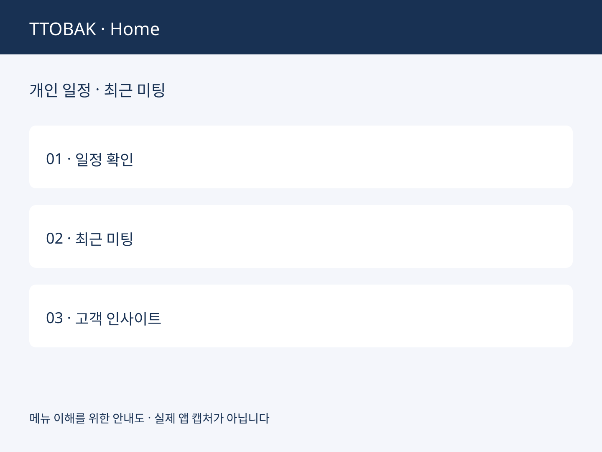
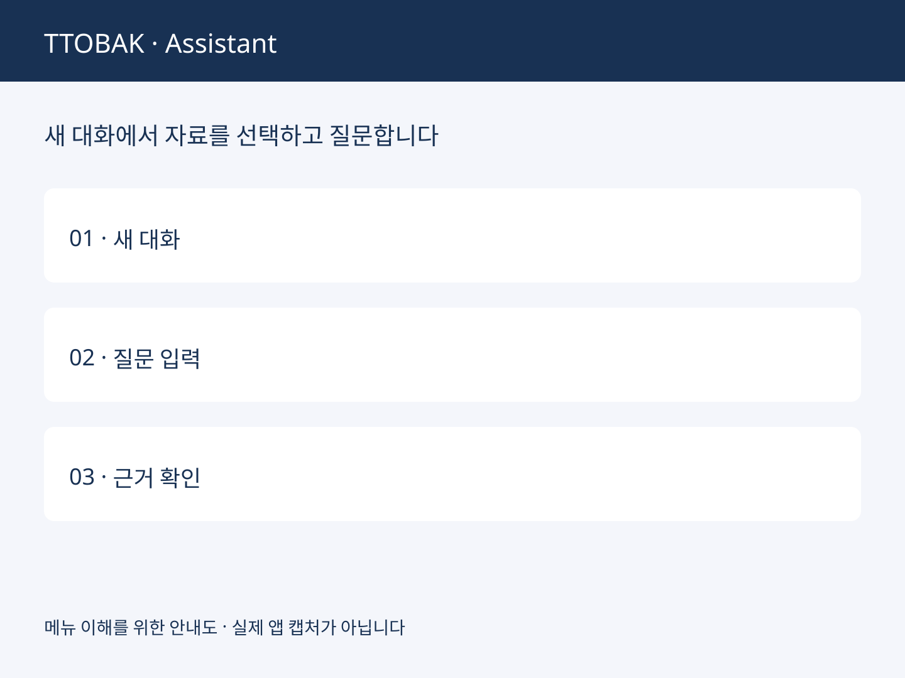
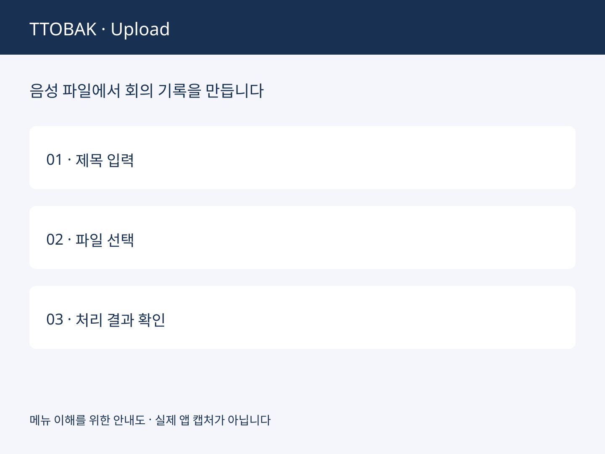
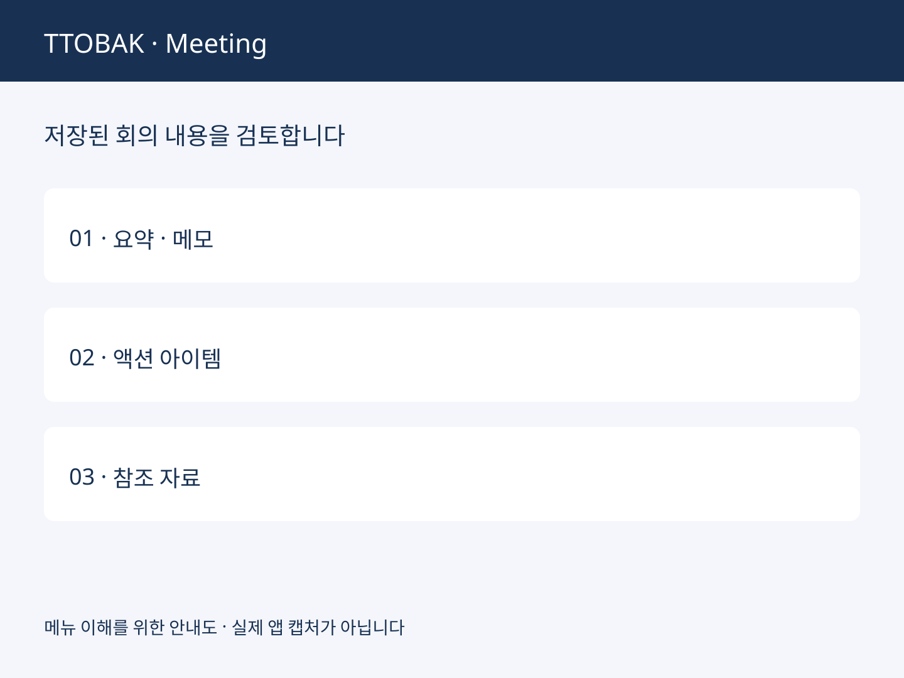
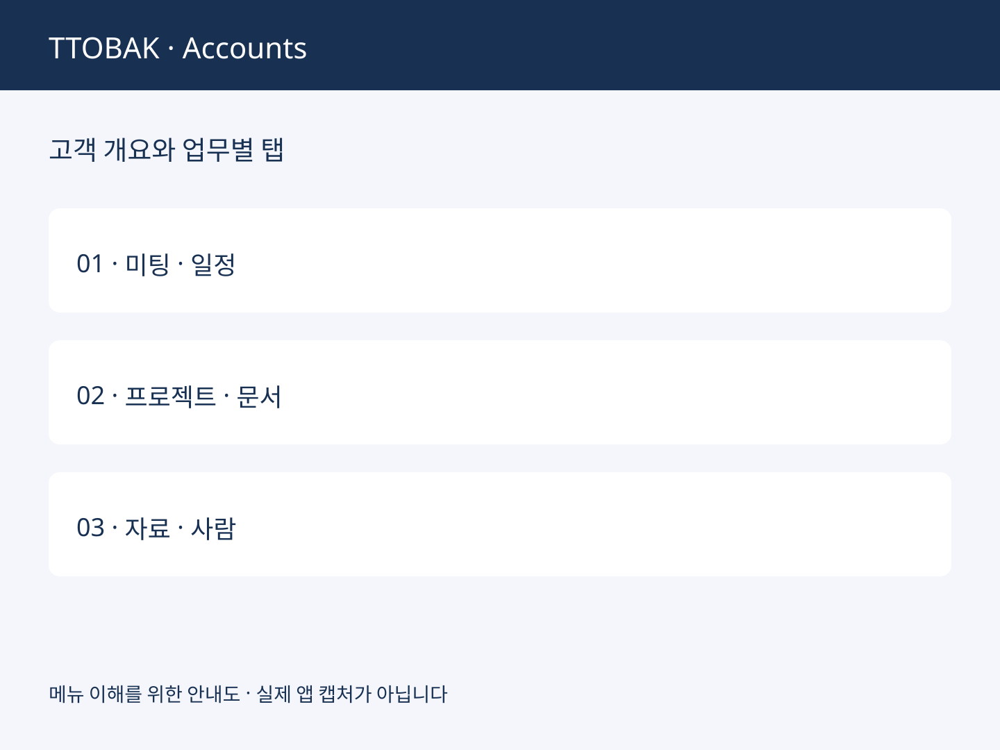
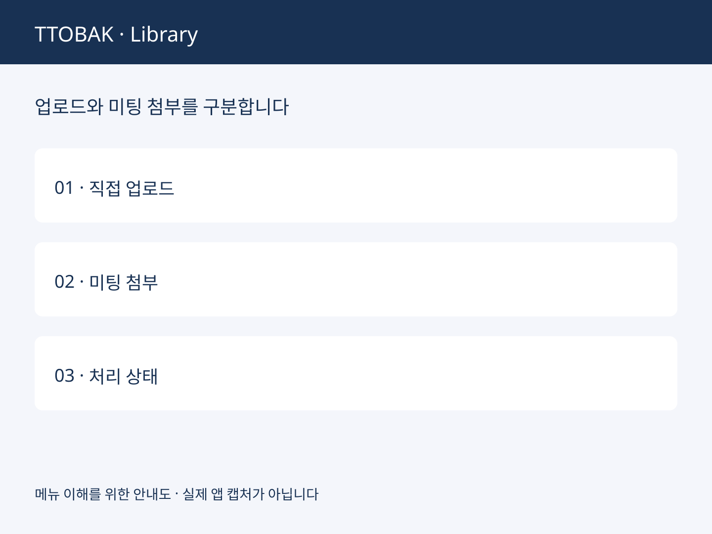
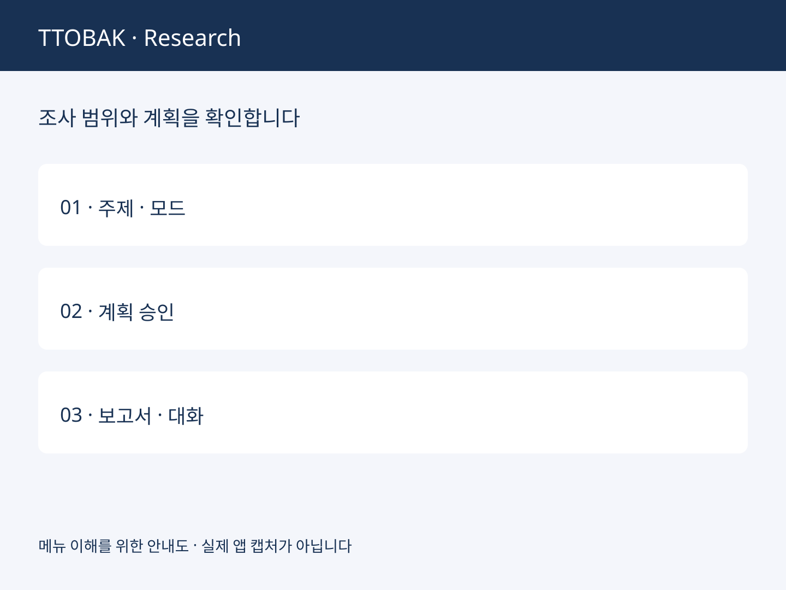
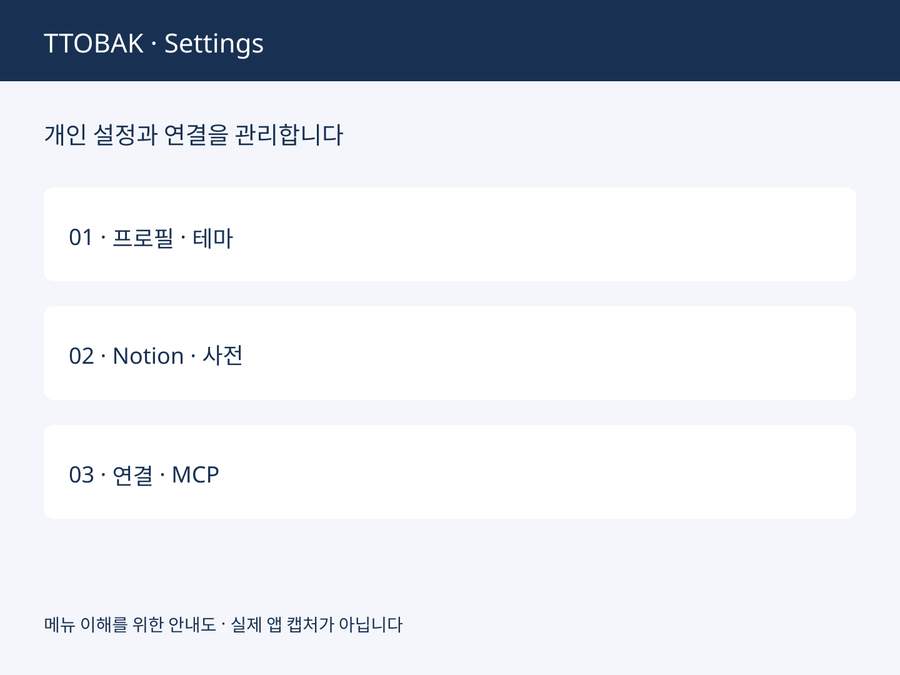

TTOBAK DOCUMENTATION / PRODUCT & OPERATIONS
회의의 기록을
다음 업무의 근거로.
또박의 모든 메뉴를 이해하고, 올바른 자료와 권한으로 AI를 사용하세요. 처음 녹음하는 사용자부터 고객·프로젝트 담당자와 관리자까지 함께 보는 제품 가이드입니다.
현재 소스의 화면·처리 흐름·기본 모델 설정을 확인했습니다. 기능의 운영 활성화, 조직 정책, 로그인 계정의 권한에 따라 보이는 항목이 달라집니다. 아래 그림은 로컬 앱의 메뉴를 확인해 만든 설명용 안내도입니다. 실제 화면 캡처나 고객·운영 데이터가 아닙니다.
01 / GETTING STARTED
시작하기
또박은 녹음·문서·고객 맥락을 연결해 회의록과 다음 행동을 만드는 업무 공간입니다. 처음에는 하나의 가상 미팅으로 녹음부터 검토·공유까지의 흐름을 익히세요.
로그인과 첫 사용
- 조직 관리자의 사용자 초대를 받습니다. 초대된 이메일과 임시 비밀번호로 로그인하고, 처음 로그인할 때 새 비밀번호를 설정합니다. 직접 가입으로 조직에 들어가는 흐름은 제공하지 않습니다.
- 로그인 이메일과 조직의 이용 정책을 확인합니다. 이메일 확인 안내가 나오면 완료합니다. 공유 초대의 대상 이메일과 현재 로그인 계정이 다르면 자료가 보이지 않을 수 있습니다.
- Home에서 업무를 시작합니다. 새 녹음은 New Meeting → 실시간 녹음, 기존 자료는 음성 파일 업로드로 시작합니다.
- 완료된 미팅을 검토합니다. 전사·요약 처리 후 Meetings에서 미팅을 엽니다. 제목, 고객 분류, 회의록, 화자, 액션 아이템을 실제 내용과 대조합니다.
- 검토한 내용만 필요한 범위에 공유합니다. 고객 연결, 프로젝트 연결, 공유의 차이를 먼저 확인합니다. 외부로 전달할 문서는 개인 Docs에 초안을 만들고 사람이 검토합니다.
마이크 입력 · 로그인 계정 · 고객 선택 · 저장 완료 상태 · 공유 범위. 녹음 자체와 AI 처리의 완료 상태는 별개입니다.
메뉴를 업무 목적에 맞게 선택하세요
| 업무 목적 | 화면 | 여기서 하는 일 |
|---|---|---|
| 오늘 할 일을 찾기 | Home | 다가오는 개인 미팅, 최근 미팅, 고객 관련 인사이트 확인 |
| 자료에 질문하기 | Assistant | 접근 가능한 미팅과 지식 자료를 대상으로 질문 |
| 회의 내용을 검토하기 | Meetings | 회의록·녹취·내 메모·첨부·Q&A·액션 아이템 |
| 고객별로 일하기 | Accounts | 고객 개요, 멤버, 연락처, 공동 일정, 문서와 관계 |
| 과제별로 모으기 | Projects | 여러 고객과 미팅·리서치를 하나의 프로젝트로 연결 |
| 내 결과물을 작성하기 | Docs | 개인 Markdown 문서와 PDF·슬라이드 관리 |
| AI가 참고할 자료 관리 | Library | 직접 업로드 파일과 미팅 첨부, 검색 준비 상태 확인 |
| 새로운 주제 조사 | Deep Research | 리서치 범위·목차를 정하고 근거가 있는 보고서 작성 |
| 변화를 따라가기 | News & Updates | 수집한 뉴스·업데이트와 출처 확인 |
| 전문 용어를 맞추기 | Custom Dictionary | 개인·고객·공통 용어와 음성 인식 사전 상태 관리 |
| 비용 분석 | Billing · 조건부 표시 | 활성화된 비용 분석 서비스나 companion으로 이동 |
| 내 환경·조직 설정 | Settings | 프로필, 연동, 연락처 가져오기, 소스와 관리자 기능 |
미팅·문서·고객·프로젝트는 서로 다른 객체입니다
미팅은 하나의 대화와 그 근거를 보관합니다. Docs는 내가 작성하거나 업로드한 문서입니다. Account는 고객·조직의 공동 업무 공간이고, Project는 하나의 과제나 기회를 묶습니다. 같은 이름이 붙어 있어도 각각의 접근 권한과 공유 상태를 확인해야 합니다.
02 / HOME
Home · 업무 시작 화면
Home은 최근 진행 상황을 빠르게 파악하는 화면입니다. 모든 미팅을 관리하는 Meetings와 달리, 다음 업무로 이동하는 시작점으로 사용합니다.
화면 경로 / · 로그인 후 Home

화면을 읽고 이동하는 순서
- 다가오는 개인 미팅의 일정과 고객 분류를 확인합니다. 가져온 캘린더 일정이 없으면 안내되는 상태와 동기화 여부를 먼저 봅니다.
- 최근 미팅에서 처리 중인 항목과 완료된 항목을 구분합니다. 완료된 미팅을 선택해 회의록 작업 공간으로 이동합니다.
- 고객을 선택할 수 있는 영역에서는 관심 있는 Account를 고릅니다. 선택은 업무 맥락을 좁히는 필터이며 새로운 공유 권한을 만들지 않습니다.
- 고객 관련 인사이트를 확인한 뒤 원래 미팅·자료를 열어 근거를 검토합니다.
- 새 미팅을 만들거나 Meetings로 이동해 더 오래된 기록을 찾습니다.
왜 목록마다 상태가 다를 수 있나요?
최근 미팅, 고객 목록과 개인 캘린더는 별도의 데이터 요청입니다. 한 영역에서 오류가 나도 다른 영역이 정상일 수 있습니다. 실패한 영역의 다시 시도를 사용하세요. 일부 미팅만 보이는 최근 목록을 전체 보관함으로 해석하지 마세요.
업로드 직후의 미팅은 완료된 요약이 없어도 목록에 나타날 수 있습니다. 처리 상태를 갱신하는 동안 화면에 표시되는 기록과 AI 결과의 준비 상태가 다르기 때문입니다.
원하는 미팅을 열 수 있고 현재 처리 상태를 이해했다면 정상입니다. Home에 일정이 보인다고 녹음이 자동 시작되거나 고객 멤버에게 일정이 공유되는 것은 아닙니다.
03 / CHAT ROUTING
어떤 챗을 사용하나요?
질문의 범위에 따라 대화 화면을 선택하세요. 또박의 Assistant, 미팅 Q&A, Research Assistant와 외부 MCP 클라이언트는 역할과 자료 범위가 다릅니다.

질문별 챗 선택표
| 하려는 일 | 선택할 챗 | 맥락과 결과 |
|---|---|---|
| “이번 주 미팅에서 미완료 할 일을 모아줘” | Assistant · /chat | 현재 접근 가능한 자료를 찾아 답변. 특정 미팅 하나에 한정되지 않음 |
| “이 미팅에서 결정한 일정은?” | 미팅 상세 → Q&A | 해당 미팅 맥락과 이용 가능한 근거를 중심으로 질문 |
| “방금 나온 기술이 뭔지 확인해줘” | 녹음 화면 → Q&A | 라이브 대화 맥락으로 질문. 최종 배치 전사와 다를 수 있음 |
| “이 리서치의 2장을 보완해줘” | Deep Research → Research Assistant | 해당 리서치의 계획·진행·보고서 맥락에서 후속 질문 |
| “Claude/Codex에서 또박 자료를 가져와 작업하고 싶어” | Settings → Developer Tools / MCP 연결 | 외부 호스트가 또박의 허용된 도구를 호출. 외부 챗의 모델·승인 정책을 함께 따름 |
Assistant 사용 절차
- 왼쪽의 Assistant를 열고 새 대화를 시작하거나 이전 세션을 선택합니다.
- 고객명, 기간, 미팅 제목과 필요한 결과 형식을 질문에 넣습니다. 범위가 좁을수록 결과를 확인하기 쉽습니다.
- 답변에 표시되는 출처와 도구 배지를 확인합니다. 회의록 검색, KB 검색, AWS Docs, 웹 검색 등 사용된 근거의 종류를 구분합니다.
- 원본을 열어 사실을 확인하고 후속 질문으로 범위를 좁힙니다. 답변에 근거가 없으면 추측인지 명확히 물어보세요.
최근 2주간 한빛 커머스 미팅에서 논의한 전환 과제를 정리해줘. 확정된 결정, 제안, 미해결 질문을 구분하고 출처를 함께 표시해줘. 접근 가능한 근거가 없으면 없다고 말해줘.
미팅 Q&A와 답변 저장
미팅 상세의 Q&A에서 질문하고, 참조 탭에서 자료를 확인합니다. 탭을 바꿀 때 대화를 유지하도록 두 패널을 숨겨 전환하지만, 화면을 떠난 뒤에도 모든 임시 대화·초안이 저장된다는 뜻은 아닙니다. 필요한 결과는 명시적으로 저장하세요.
내 메모에 추가는 답변을 내 메모 초안에 넣는 동작입니다. 이후 메모의 저장 상태를 확인해야 합니다. AI의 문장을 추가했다는 사실과 저장·검토가 완료됐다는 사실을 구분하세요.
왜 답변이 달라지거나 시간이 걸리나요?
AI는 질문에 필요한 검색·읽기 도구를 선택하고 현재 권한이 있는 근거를 가져온 뒤 답변합니다. 원문이 변경되거나 공유가 철회되면 과거에 읽은 자료라도 현재 사용할 수 없습니다. 캐시와 이전 대화가 최신 권한을 대신하지 않습니다.
자료 검색, 모델 생성과 스트리밍은 별도 단계입니다. 화면에 답변 일부가 보이면 완료 표시까지 기다립니다. 시간 초과는 “근거 없음”이나 빈 답변의 정상 완료와 다릅니다.
수동 Q&A도 외부 검색을 사용할 수 있습니다. 녹음 중의 선제 검색은 별도 사용자 선택으로 켭니다. 선제 검색을 껐다는 사실만으로 모든 수동 질문의 외부 검색이 차단되는 것은 아닙니다. 조직 정책에 맞게 질문 내용을 정하세요.
04 / AI & MECHANISMS
AI 모델과 처리 원리
또박은 하나의 챗 모델로 모든 일을 처리하지 않습니다. 음성 인식, 화자 분리, 회의록 작성, 검색 답변, 번역과 리서치를 각각의 목적에 맞는 처리 단계로 나눕니다.
기능별 기본 모델
| 기능 | 기본 구성 | 담당하는 일 |
|---|---|---|
| 최종 회의록 | GPT-6.1 Sol | 전사·검증된 자료로 최종 회의록 작성. 배포 preset/환경 설정으로 교체 가능 |
| 회의록·녹취 번역 | GPT-6 Luna | 요청한 한국어/영어 읽기 페이지를 번역. 결과를 원문에 자동 저장하지 않음 |
| 전사 텍스트 정리·보조 작업 | Claude Sonnet 5.5 / Opus 5.5 | 서비스가 선택한 보조·정리 경로 수행. 최종 회의록 모델과 구분 |
| Assistant / 미팅 Q&A | Claude Sonnet 5.5 | 현재 근거와 도구 결과를 사용해 답변 |
| Q&A 경량 감지 | Claude Haiku 5.5 | 질문·대화 감지 등의 작은 판단 단계 |
| Deep Research / Research Assistant | Claude Opus 5.5 | 조사 계획, 다중 소스 조사, 보고서와 후속 대화 |
| 이미지 처리 | Claude Opus 4.8 | 업로드 이미지 분석 경로 |
| 시뮬레이션 | Claude Sonnet 5.5 | 제한된 수치 조건을 바탕으로 시뮬레이션 구성 |
| 뉴스 요약 | Claude Sonnet 5.5 | 수집한 문서를 요약·정리하는 경로 |
| 실시간 음성 / 최종 배치 전사 | Amazon Transcribe / faster-whisper | 말을 텍스트로 변환. 배치 화자 분리는 pyannote 경로와 별도 결합 |
표는 코드와 인프라의 기본 설정입니다. 회의록은 standard, terra, sonnet 같은 배포 preset과 명시적 설정으로 달라질 수 있고, 번역도 별도 설정입니다. 외부 Claude·Codex·ChatGPT 호스트로 MCP를 사용할 때는 그 호스트가 선택한 모델이 대화를 수행합니다. 또박의 Q&A 모델과 동일하다고 가정하지 마세요.
음성 인식과 회의록 작성이 나뉜 이유
음성 인식은 실제 발화와 시간·화자 정보를 최대한 보존하는 일입니다. 회의록은 이를 결정사항·주제·할 일 중심으로 재구성하는 일입니다. 분리해야 “말하지 않은 내용을 매끄럽게 만들기”와 “발화의 근거를 확인하기”를 구분할 수 있습니다.
화자 라벨은 음향 기반 정보가 우선이고, 텍스트 정리 모델이 이름을 마음대로 새로 확정하는 구조가 아닙니다. 그래서 잘못된 화자나 누락은 원음·녹취와 대조하고 화자 매핑 또는 재처리를 사용해야 합니다.
검색 답변은 어떤 순서로 만들어지나요?
- 질문과 선택한 화면의 맥락을 읽습니다.
- 허용된 검색·읽기 도구로 후보 자료를 찾습니다.
- 현재 사용자에게 읽기 권한이 있는지, 현재 원문과 맞는지 확인합니다.
- 확인된 본문과 도구 결과를 모델에 전달합니다.
- 답변·출처를 보여주고, 사용자가 최종 결과를 확인합니다.
이 방식은 검색 증강 생성(RAG)이라고 부릅니다. 검색 등록된 파일이 있다는 사실만으로 매 질문마다 그 파일을 실제 읽었다는 뜻은 아닙니다. 답변의 출처와 실제 내용이 함께 맞아야 합니다.
왜 이전 결과를 남기고 실패를 표시하나요?
재요약·액션 아이템 처리 중 네트워크나 모델 오류가 나면 이전 정상 결과를 보존하는 경로가 있습니다. 성공한 새 결과만 현재 자료와 편집 상태를 확인한 뒤 게시합니다. 빈 결과·오류·진행 중을 구분해야 잘못된 결과가 사용자 작업을 덮어쓰는 일을 줄일 수 있습니다.
모델 설정의 확인 근거
infra/lib/model-config.ts, infra/lib/gateway-stack.ts, backend/internal/service/bedrock.go, backend/python/qa/handler.py, backend/python/research-agent/agent.py, backend/python/sim/handler.py, backend/python/crawler/news_crawler.py.
05 / LIVE RECORDING
실시간 녹음
대화 중에는 안전하게 녹음하고 맥락을 기록하세요. 라이브 자막과 질문은 보조 기능이며, 녹음 종료 후의 최종 전사·회의록과 별도로 이해해야 합니다.
New Meeting → 실시간 녹음 · /record
녹음 전 준비
- 조직 정책과 참석자의 녹음 동의를 확인합니다.
- 마이크 권한을 허용하고 실제 사용할 입력 장치를 확인합니다. Mac의 다른 앱 소리는 Mac 앱 경로를 이용합니다.
- 제목, 관련 고객, 미팅 유형과 배경을 입력합니다. 배경은 사전 정보이며 실제 발화의 증거를 대신하지 않습니다.
- 참석자·용어를 확인합니다. 자동으로 확정되지 않는 화자 이름은 나중에 매핑합니다.
- 네트워크와 저장 공간을 확인합니다. 모바일은 화면 잠금·백그라운드 제약이 더 큽니다.
녹음부터 완료까지
- 녹음 시작을 누르고 녹음 상태와 입력 반응을 확인합니다. 라이브 자막이 나오기만 기다리지 말고 실제 녹음이 진행 중인지 봅니다.
- 내 메모에 결정사항·질문을 간단히 적습니다. Q&A는 별도 패널에서 이용합니다.
- 선제 검색이 필요한 경우 해당 선택을 켭니다. 대화에서 감지한 질문을 외부 검색에 사용할 수 있다는 점을 조직 정책과 비교합니다.
- 종료할 때 정지·완료 흐름을 사용합니다. 업로드가 확인될 때까지 화면을 임의로 닫거나 녹음 파일을 삭제하지 않습니다.
- Meetings에서 업로드·전사·회의록 생성 상태를 확인하고, 완료 후 회의록과 화자를 검토합니다.
라이브 자막과 최종 녹취가 다른 이유
라이브 자막은 낮은 지연으로 대화를 따라가는 경로입니다. 최종 처리는 저장된 음성을 다시 처리하며 화자 분리·텍스트 정리와 요약을 수행합니다. 중간 자막의 문장 경계·화자·오탈자가 최종 결과와 다를 수 있습니다. 라이브 자막만으로 정확한 회의록이 확정됐다고 보지 마세요.
녹음 중 문제가 생겼을 때
자막이나 Q&A가 실패해도 녹음은 별도로 계속할 수 있습니다. 화면에 녹음 중단·정체 안내가 보이면 안내된 복구·오디오 재개 버튼을 사용합니다. 브라우저 오디오는 사용자 동작이 필요한 경우가 있어 버튼을 직접 눌러야 합니다.
브라우저에는 녹음 복구와 로컬 백업 경로가 있습니다. 복구 안내가 보이면 남은 자료를 확인한 뒤 이어서 업로드합니다. 브라우저 데이터 삭제·시크릿 창 종료·다른 기기로 이동하기 전에 백업이 어디에 있는지 확인하세요. 복구 가능성을 데이터 보존 보증으로 해석하지 마세요.
녹음 중지 → 오디오 업로드 확인 → 전사 완료 → 회의록 생성 완료를 각각 확인합니다. 가장 마지막 단계 뒤에도 사람이 실제 발화와 결과를 검토해야 합니다.
06 / UPLOAD
파일로 미팅 만들기
이미 녹음한 음성이나 참고 문서가 있으면 업로드로 미팅을 만들 수 있습니다. 파일을 담은 상태, 업로드 완료, 텍스트 추출 완료와 AI 결과 완료를 구분하세요.
New Meeting → 음성 파일 업로드 · /record?mode=upload

자료를 모아 올리는 순서
- 업로드 화면에서 제목·미팅 배경·고객을 설정합니다. 기존 미팅을 보완하려는지 새 기록을 만들려는지 확인합니다.
- 지원되는 음성·문서 파일을 선택하거나 끌어 넣습니다. 여러 파일을 담은 경우 대기열의 파일명과 종류를 확인합니다.
- 필요한 파일을 모두 담은 뒤 화면의 완료 동작으로 업로드를 시작합니다. 파일 선택 자체로 전체 업로드가 확정되는 것은 아닙니다.
- 각 파일의 오류를 확인합니다. 일부 파일만 실패하면 성공한 자료와 실패한 자료를 나눠 파악합니다.
- Meetings에서 처리 상태를 확인합니다. 문서만 올렸거나 첨부 추출이 실패했다면 음성 전사와 같은 결과를 기대하지 마세요.
지원 형식과 제한
업로드 화면이 안내하는 음성 형식과 PDF·PPT·문서 형식을 사용합니다. 이 화면의 개별 파일 크기 검사는 최대 500MB입니다. 다른 도구·MCP·Library 업로드는 자체 제한이 있으므로 이 수치를 모든 경로에 적용하지 마세요.
손상되거나 암호가 걸린 파일, 지원되지 않는 내부 인코딩은 확장자가 맞아도 처리에 실패할 수 있습니다. 파일을 원래 프로그램에서 열어 확인하고 필요하면 지원 형식으로 다시 저장합니다. 민감한 내용의 변환은 조직에서 승인한 도구로 수행하세요.
왜 파일이 보이는데 회의록이 없나요?
| 상태 | 의미 | 다음 확인 |
|---|---|---|
| 업로드 완료 | 파일이 저장됨 | 전사 또는 문서 추출 상태 |
| 미리보기 생성 | 화면에서 문서를 볼 수 있음 | AI가 사용할 본문 추출 여부 |
| 본문 추출 완료 | 텍스트를 얻음 | 현재 파일에 맞는 결과인지, 부분 추출인지 |
| 검색 준비 | 검색 경로에 등록됨 | 질문에서 실제 자료를 참조했는지 |
| 회의록 생성 완료 | 현재 근거로 결과를 게시함 | 사람의 검토와 저장·공유 |
필요한 음성 구간만 다시 처리할 때
미팅의 오디오 자르기 기능이 보이면 시작·종료 시간을 확인한 뒤 대상 구간을 선택합니다. 처리 중에는 상태가 바뀔 수 있으므로 완료 후 실제 선택 구간과 결과를 다시 확인합니다. 원본 보존·현재 작업 상태와 재처리 대상은 해당 화면의 안내를 따릅니다.
07 / MEETINGS
Meetings · 회의록 작업 공간
미팅 상세는 기록을 검토하고 업무에 사용할 결과를 확정하는 공간입니다. 생성된 회의록과 내가 작성한 메모, 근거인 녹취·첨부를 서로 구분해 사용합니다.
Meetings · /meetings → 미팅 선택

목록에서 미팅 찾기
- 전체·공유받은 미팅 등 표시된 목록 탭을 선택합니다.
- 제목 검색과 고객 필터를 사용해 대상 미팅을 좁힙니다. 필터가 남아 있으면 기대한 미팅이 숨겨질 수 있습니다.
- 처리 중·오류·완료 상태를 확인합니다. 최근 업로드한 미팅은 AI 결과가 준비되기 전에 나타날 수 있습니다.
- 추가 목록 버튼이 있으면 더 불러옵니다. 첫 화면에 없다는 이유로 기록이 삭제됐다고 판단하지 마세요.
미팅 상세의 영역별 역할
| 영역 | 역할 | 작업 기준 |
|---|---|---|
| 제목·고객·유형 | 분류와 업무 맥락 | 실제 미팅과 연결된 대상인지 확인 |
| 회의록·요약 | AI가 정리한 결과 | 결정·제안·추측을 구분해 검토 |
| 녹취·화자 | 발화 근거 | 원음·시간·화자 매핑과 대조 |
| 내 메모 | 사용자가 만든 별도 문서 | 참조를 선택해 초안을 보완하고 저장 |
| 첨부·참조 | 원문·문서·질문 결과 | 추출 상태·출처와 현재 접근 확인 |
| Q&A | 미팅 맥락의 질문 | 답변 출처를 열어 확인 |
| 액션 아이템 | 다음 할 일 | 담당·기한·완료 여부를 사람이 점검 |
권장 검토 절차
- 회의록에 적힌 결정을 녹취·첨부와 대조합니다. 합의되지 않은 제안을 결정사항으로 바꾸지 않습니다.
- 화자를 확인하고 잘못 연결된 이름을 수정합니다. 실제 음향 분리 문제는 참석자 수·재분리 기능과 함께 확인합니다.
- 녹취 A/B 비교가 제공되면 원하는 근거를 비교·선택합니다. 선택한 편집 내용이 저장됐는지 확인합니다.
- 내 메모에 필요한 회의록·녹취·첨부·참조를 추가하고 내용과 출처를 점검합니다.
- 저장 상태를 확인하고, 다른 사용자의 변경이 있으면 최신 버전과 비교합니다.
- 현재 원문으로 결과를 다시 만들 필요가 있으면 저장 자료로 다시 요약을 사용합니다.
저장 자료로 다시 요약
재요약은 저장된 원문·검증된 자료를 기준으로 새 회의록을 만드는 작업입니다. 다시 음성 인식을 실행하는 것과 다릅니다. 출력 언어 선택이 보이면 자동·한국어·English 중 필요한 값을 선택하고 실행합니다.
진행 중에는 입력 자료와 편집 상태를 확인합니다. 재요약 중 누군가 내용을 바꾸면 오래된 결과를 현재 내용에 그대로 게시하지 않는 보호 경로가 있습니다. 성공 후 새 요약 불러오기를 사용해 결과를 확인하고, 내 메모가 자동으로 같은 내용이 됐다고 가정하지 마세요.
AI 결과를 다시 생성해도 사용자의 업무 판단과 작성 내용이 함께 덮어써지면 안 되기 때문입니다. 생성 결과를 참고해 내 메모를 갱신하되 사람이 선택·저장하는 흐름을 유지합니다.
회의록·녹취 번역
번역 언어를 한국어·영어로 선택하면 현재 읽기 페이지를 번역합니다. 긴 자료는 다음 페이지를 이어서 번역합니다. 번역은 화면 내 임시 결과이며 원문을 자동 수정하거나 영구 문서로 저장하지 않습니다. 필요한 번역문은 검토 후 별도 문서로 보관하세요.
원문이 바뀌면 이전 번역을 그대로 이어 읽을 수 없을 수 있습니다. 처음부터 다시 번역합니다. 기능 비활성화·사용 한도·오류는 각각의 안내를 따르세요.
편집 충돌을 만났을 때
변경할 권한과 최신 내용이 일치해야 저장됩니다. 충돌·권한 변경 오류가 나면 내 초안을 별도 보관하고 최신 내용을 불러온 뒤 필요한 차이만 반영합니다. 새로고침 전에 저장하지 않은 초안이 있는지 확인하세요.
08 / PRIVATE CALENDAR
개인 캘린더와 다가오는 미팅
개인 캘린더에서 가져온 일정은 나의 미팅 준비를 돕습니다. Account의 공동 일정과는 저장·권한·동기화 경로가 다릅니다.
개인 일정이 보이기까지
- 조직에서 승인한 로컬 Outlook 읽기 도구와 또박 stdio MCP 연결을 준비합니다.
- 캘린더 동기화 절차에 따라 사용자·메일함·대상 캘린더의 범위를 정합니다. 임의의 다른 사용자나 캘린더와 같은 동기화 상태를 재사용하지 않습니다.
- 가상 일정으로 읽기·반복 일정·이동·취소·비공개 처리와 재전송을 확인한 뒤 실제 일정 동기화를 사용합니다.
- Home 또는 고객 화면의 다가오는 개인 미팅에서 제목·시간·최종 동기화 상태를 확인합니다.
동기화의 원리
동일한 반복 일정도 각각의 발생 건을 구분하는 원본 식별자로 저장합니다. 제목이나 현재 시작 시각을 식별자로 사용하면 일정 이동 때 중복이 생길 수 있습니다. 이미 보낸 요청의 결과가 불확실하면 같은 요청을 다시 확인하는 방식으로 중복을 줄입니다.
일정이 읽기 결과에 없다는 것만으로 삭제하지 않습니다. 권한 변경, 읽기 범위 이동, 누락된 페이지와 실제 취소를 구별해야 하기 때문입니다. 추적한 발생 건의 확인된 취소·제외가 있을 때만 제거합니다. 자료를 다 읽고 변경을 확인한 뒤의 완료 상태와 마지막 시도 시각도 별도로 취급합니다.
빈 일정·실패·오래된 동기화를 구분하세요
| 상황 | 가능한 의미 | 할 일 |
|---|---|---|
| 일정 없음 | 해당 범위에 없음, 아직 동기화 전 | 연결과 조회 범위 확인 |
| 최근 동기화 완료 | 확인한 범위의 변경을 반영 | 현재 시간·시간대 확인 |
| 최근 시도 실패 | 토큰·네트워크·충돌 등 문제 | 이전 정상 일정과 실패 시각을 분리해 판단 |
| 일정이 이동·취소됐는데 남음 | 삭제 근거를 아직 확인하지 못했을 수 있음 | 원본과 동기화 경로를 점검 |
원본 도구가 비공개 표시를 전달하는지 먼저 확인해야 합니다. “읽기 전용”은 “민감한 일정을 자동 제외”한다는 뜻이 아닙니다. 일정이 보이는 것만으로 녹음이나 고객 공유가 자동 실행되지는 않습니다. 로컬 intake 도구의 자동화 기능은 설치 버전과 별도 수용 검증을 확인하세요.
로컬 MCP로 Outlook을 연결하는 절차
현재 소스에는 ttobak-mcp intake 명령줄 수집기가 있습니다. Mac Settings 안에서 수집 서버를 선택하는 UI는 아직 제공되지 않습니다. 지원되는 로컬 Outlook reader와 TTOBAK stdio 어댑터를 준비하고 각각 로그인해야 합니다. 아래 명령은 어댑터 설치가 끝난 컴퓨터에서 실행하는 예시입니다.
- 로컬 호스트의 MCP 설정에 승인된 Outlook reader가 있는지 확인합니다. reader의 읽기 권한·실행 파일·인증 갱신을 확인합니다.
node ~/.ttobak/server.mjs intake hosts로 지원 호스트에서 발견한 서버 이름·전송 방식·활성 상태를 확인합니다. 이 명령은 설정의 비밀값을 표시하지 않습니다.node ~/.ttobak/server.mjs intake select calendar --host claude --server aws-outlook-mcp처럼 실제 호스트·서버를 선택합니다.claude,codex,kiro는 MCP 설정을 읽는 호스트이며 캘린더 내용을 이해하는 필수 대화 모델을 뜻하지 않습니다.node ~/.ttobak/server.mjs intake calendar --dry-run으로 최근 7일·다음 30일의 계획과 건수를 확인합니다. dry run은 TTOBAK에 일정을 쓰지 않습니다. 제목 미리보기를 추가하는 옵션은 로컬 화면에도 민감한 일정 제목이 나타날 수 있으므로 필요한 경우만 사용합니다.- 공개·비공개·반복 일정·이동·취소·종일 일정을 가상 자료로 검증한 뒤
node ~/.ttobak/server.mjs intake calendar를 실행합니다. 최초 TTOBAK 로그인이 필요하면 대화형 인증을 완료합니다. node ~/.ttobak/server.mjs intake status와 Home·Meetings에서 결과를 비교합니다. 같은 작업을 다시 실행했을 때 중복 변경이 없는지 확인합니다.- 본인 컴퓨터에서 읽기·재시도·제외 정책이 검증된 뒤에만 반복 실행을 설정합니다. 이 가이드는 사용자의 Mac에서 제공자 검증이나 무인 스케줄 설치가 끝났다고 보증하지 않습니다.
현재 reader가 비공개 일정을 숨기거나 민감도 표시를 반환한다고 가정할 수 없습니다. 민감도가 없으면 기본 수집은 SENSITIVITY_UNKNOWN으로 중단될 수 있습니다. 민감도 미확인 허용 옵션을 켜면 비공개 일정도 개인 TTOBAK 캘린더로 들어올 수 있습니다. 단순 오류 해결을 위해 켜지 말고 조직의 제외 정책과 실제 reader 동작을 먼저 확인합니다.
409 충돌은 서버 버전과 로컬 상태를 조정해야 하는 상황입니다. 화면·지원 안내를 확인하고 재조정 후 실행합니다. 중간 인증 만료·서버 스키마 변경·다른 작업 실행 중 등의 오류는 각각 원인을 해결한 뒤 재시도합니다. 날짜 범위에서 사라진 일정은 자동 삭제 근거로 사용하지 않습니다.
09 / PREPARE & FOLLOW UP
미팅 준비 · 액션 아이템 · 후속 업무
기록을 만든 뒤에는 검토한 사실을 다음 미팅과 담당자의 작업으로 연결하세요. AI가 추출한 할 일은 사람의 확인을 거쳐 사용합니다.
다음 미팅 준비
- 관련 고객과 이전 미팅·프로젝트·리서치를 확인합니다.
- 새 미팅의 배경·준비 자료에 핵심 질문과 참고할 내용을 작성합니다.
- 출처가 있는 기존 자료만 선택해 내 메모 초안을 보완합니다. 근거가 없는 예상 발화를 실제 대화처럼 넣지 않습니다.
- 미팅 시작 전 참석자·고객 분류·기록할 목표를 확인합니다.
액션 아이템 확인과 완료 표시
- 미팅 상세의 액션 아이템 카드에서 처리 상태를 확인합니다.
- 각 항목의 내용·담당자·기한을 실제 합의와 비교합니다. 제안·가능성·확정된 할 일을 구별합니다.
- 실제로 완료한 항목만 완료로 표시합니다. 동시에 다른 사람이 바꾼 상태가 있다면 최신 값을 다시 확인합니다.
- 추출 실패·중단 상태가 보이면 권한이 있는 사용자가 재시도합니다. 이전 항목이 남아 있다면 새 추출이 성공한 결과인지 확인합니다.
“할 일 없음”과 “처리 실패”의 차이
정상 완료된 빈 결과만 할 일이 없다는 의미입니다. 아직 실행하지 않음, 실행 중, 실패·중단은 다릅니다. 실패한 작업 때문에 기존 할 일과 사람이 완료한 상태를 무조건 없애지 않는 보호 경로가 있습니다.
개인 후속 문서 만들기
미팅의 후속 업무 영역에서 개인 Docs 초안을 만듭니다. 후속 메일, 다음 미팅 준비, 제안 개요 등 필요한 목적에 맞춰 검토합니다. 관련 Project로 연결할 수 있어도 전체 미팅의 읽기 권한은 별도로 확인됩니다.
초안 생성은 이메일 발송이나 고객 공유의 완료가 아닙니다. 약속, 수치, 날짜와 민감한 정보를 검토하고 저장·공유·발송을 각각 확인하세요.
이 미팅을 기준으로 후속 메일 초안을 작성해줘. 확정한 사항과 검토할 사항을 나누고, 담당자·기한이 불명확하면 확인 필요로 표시해줘. 아직 합의하지 않은 일정이나 비용을 확정한 것처럼 쓰지 말아줘.
10 / SIMULATION
비용·사이징 시뮬레이션
회의에서 나온 수치 조건으로 대안을 비교합니다. 결과는 검토용 계산이며 공식 견적이나 성능 보증을 대신하지 않습니다.
미팅 상세 → 시뮬레이션 카드 · 사용 가능한 소유자 기능
조건 확인부터 실행까지
- 미팅의 녹취와 전사 상태를 확인합니다. 수치 조건의 근거가 있어야 합니다.
- 시뮬레이션 카드에서 조건 추출을 시작합니다. 처리 중에는 완료 상태를 기다립니다.
- 추출된 요구사항·범위·단위와 제공된 옵션을 검토합니다. 거래량과 동시 사용자 수, 월 비용과 시간당 비용을 혼동하지 않습니다.
- 화면이 제공하는 선택·수정 범위에서 조건을 확정하고 실행합니다. 임의의 새로운 요구사항 입력 기능이 있다고 가정하지 마세요.
- 완료 후 차트·표·사용 조건을 함께 읽습니다. 비교 가능한 기준인지와 누락된 비용 항목을 확인합니다.
왜 추출과 실행을 나누나요?
자연어 녹취에서 조건을 얻는 과정과 수치 계산을 실행하는 과정의 위험이 다르기 때문입니다. 전사는 조건 추출에 사용하고, 허용된 수치 구조만 코드 생성에 전달하는 경로를 사용합니다. 모델이 만든 코드의 실행은 별도의 제한된 환경에서 이루어집니다.
한 미팅의 실행 상태를 구분해 오래된 실행 결과가 새 결과를 덮어쓰지 않도록 보호합니다. 진행 중 결과와 이전 완료 결과의 시각·실행 상태를 확인하세요.
계산 결과를 읽는 체크리스트
- 입력 조건: 시간 범위, 사용자 수, 요청량, 저장량, 데이터 전송 등 어떤 값이 실제 사용됐는가?
- 단위: MB와 MiB, 초와 시간, 월과 일, 동시성과 누적량을 일관되게 비교했는가?
- 요금 범위: 계산 코드가 지원하는 서비스·리전·항목이 무엇인가? 모든 서비스의 최신 요금을 포괄한다고 해석하지 않는다.
- 제외 비용: 할인·약정·세금·환율·운영비·추가 네트워크 비용 등의 반영 여부를 별도로 확인한다.
- 성능: 계산상의 예상 용량과 실제 부하 테스트 결과를 구분한다.
추출 실패, 실행 실패, 아직 생성되지 않은 결과를 구분합니다. 동일 버튼을 반복 누르기 전에 현재 실행 상태를 확인하세요. 지원 범위를 벗어난 서비스는 별도 가격 도구와 실측으로 검토합니다.
08 / ACCOUNTS
고객·조직별로 정리하기

- Accounts에서 고객·조직 이름을 입력해 생성합니다. 별칭·태그와 업종은 검색·분류에 도움이 됩니다.
- 상세 화면의 Members에서 구성원을 추가하고 필요한 역할을 지정합니다.
- 연결된 프로젝트·리서치·공유 미팅·문서를 확인합니다. 각 자료의 실제 읽기 권한은 별도로 적용됩니다.
- 상하위 고객 구조가 필요하면 제공되는 상위 Account 편집 기능을 사용합니다.
기존 구성원은 구성원 추가와 허용된 역할 변경을 할 수 있지만 owner 역할을 지정할 수는 없습니다. 구성원 제거·대기 초대 취소·상위 Account 변경은 소유자 작업입니다. 상하위 Account 관계만으로 서로의 자료 접근 권한이 상속되지는 않습니다.
12 / CONTACTS
연락처 · 명함과 일괄 가져오기
고객 연락처는 외부 담당자를 관리하는 주소록입니다. 서비스 사용자 초대와 구분하고, 가져오기 미리보기에서 고객 배정과 중복을 먼저 확인합니다.
Accounts → 고객 개요 → 연락처 · Settings → 연락처 가져오기
한 명씩 등록하기
고객의 직접 멤버로 개요 화면에서 연락처 추가를 엽니다.
13 / PEOPLE & SIGNALS
사람 · 관계 · 시그널 · 흐름
흩어진 이름과 고객 업무 단서를 정리하는 화면입니다. 참석한 사람, 대화에서 언급된 사람, 연락처로 확인된 사람을 같은 의미로 취급하지 않습니다.
Accounts → 고객 개요 → 사람·관계·시그널·흐름 영역
미확인 언급을 실제 인물에 연결하기
고객에서 연결된 사람과 미해결 언급 목록을 확인합니다.
09 / PROJECTS
프로젝트 중심으로 협업하기
- Projects에서 이름을 입력해 생성합니다. SFDC Opportunity ID·URL·Stage는 필요한 경우 채웁니다.
- 프로젝트 상세에서 직접 구성원을 추가하거나 Linked Accounts로 고객·조직을 연결합니다.
- 관련 미팅과 리서치를 연결하고 상세 화면에서 확인합니다.
- 프로젝트를 삭제해야 한다면 먼저 연결 관계를 확인·정리합니다. 연결 자료가 남아 있으면 삭제가 거부될 수 있습니다.
프로젝트 소유자, 직접 구성원과 연결된 Account의 구성원이 프로젝트에 접근할 수 있습니다. Account 연결을 끊으면 그 경로로 접근하던 구성원이 권한을 잃을 수 있습니다. 프로젝트에 표시되는 미팅도 전체 내용은 별도의 미팅 권한을 확인합니다.
10 / DOCUMENTS
개인 문서 작성·보관·공유하기
- Documents에서 제목을 입력해 새 문서를 만들거나 PDF·PPT·PPTX를 업로드합니다.
- 문서를 열어 내용을 편집하고 저장합니다. 파일 문서는 미리보기·다운로드로 원본을 확인합니다.
- 필요하면 동료에게 읽기 전용으로 공유하거나 Account에 공유합니다. 공유 방식의 차이는 공유 안내를 확인하세요.
공개 링크가 필요한 경우
문서에 해당 버튼이 보이면 공개 링크 만들기 → 링크 복사를 사용합니다. 이 링크는 로그인 없는 접근을 허용하므로 공개 가능한 문서에만 사용합니다. 중지하려면 공개 링크 해제를 누릅니다. 해제 전에 발급된 다운로드 주소는 짧은 유효시간 동안 남을 수 있으며 이미 받은 파일은 회수되지 않습니다.
미리보기를 열 수 없으면 제공되는 다운로드 버튼을 이용합니다. 파일을 교체했다면 새 원본과 미리보기가 일치하는지 확인하고, 이전 파일 화면을 새 파일이라고 오해하지 마세요.
11 / FILES & KNOWLEDGE
첨부 파일과 지식 자료 찾기

Files에서는 미팅 첨부 자료를 모아 확인하고 원래 미팅으로 돌아갈 수 있습니다. Knowledge Base에서는 검색용 지식 파일의 목록·크기·수정 시각 등을 확인하고 동기화를 요청할 수 있습니다. 이 목록은 파일별 검색 등록 완료 상태를 표시하지 않습니다. 지원되는 미팅·문서의 등록 상태는 해당 상세 화면에서 확인하세요. 개인 문서를 작성하는 Documents와 용도가 다릅니다.
- 제목·분류 등 제공되는 필터로 자료를 찾습니다.
- 원문이나 첨부 상세를 열고 출처와 내용이 맞는지 확인합니다.
- 미팅·문서 상세에 검색 등록 또는 텍스트 처리 상태가 보이면 완료 여부를 확인합니다. 실패 시 해당 화면이 제공하는 재시도를 이용합니다. Knowledge Base의 동기화 요청 성공을 등록 완료로 해석하지 마세요.
- Q&A에서 찾지 못하면 파일 존재 여부뿐 아니라 추출 내용, 등록 상태, 현재 열람 권한을 함께 확인합니다.
“일부” 또는 이전 추출 결과 유지 표시가 있으면 최신 파일 전체가 반영된 상태가 아닐 수 있습니다. 검색 등록 완료 표시만으로 모든 질문에서 그 자료가 사용된다고 보장할 수 없습니다.
12 / INSIGHTS & RESEARCH
수집 자료와 리서치 활용하기

Insights에서 수집된 기사·자료와 리서치를 탐색합니다. 카드·표 보기와 필터를 활용하고, 요약만 읽지 말고 원문 날짜와 출처도 확인하세요.
- New Research를 누르고 조사 주제를 적습니다. 예: “소매업 고객의 데이터 분석 도입 사례를 최근 자료 중심으로 비교하고 출처를 정리해줘.”
- Quick / Standard / Deep 중 모드를 선택합니다. 화면의 예상 시간은 각각 2~5분, 5~10분, 10~20분이며 완료 시간을 보장하지 않습니다.
- 리서치 상세의 대화에서 제안된 구조를 검토합니다. 계획 단계에서는 수정 사항을 입력하거나 이 구조로 진행을 눌러 승인합니다.
- 진행 상태와 생성된 페이지를 확인합니다. 필요한 경우 하위 주제를 추가하고 후속 질문으로 보완합니다.
- 완료된 결과의 출처·시점·가정을 검토한 뒤 제공되는 내보내기·공유 기능을 사용합니다.
리서치 대화는 Enter가 줄바꿈으로 동작할 수 있으므로 전송 버튼을 확인하세요. 생성 또는 처리 시작에 실패했다는 표시가 있으면 결과가 만들어졌다고 가정하지 말고 재시도합니다.
19 / NEWS & UPDATES
News & Updates · 수집된 변화 읽기
외부 소스에서 수집한 뉴스·업데이트를 정리해 봅니다. 수집·요약 시점이 있으므로 실시간 전체 웹이나 변경 없는 공식 원문으로 취급하지 않습니다.
News & Updates · /insights
뉴스를 업무에 활용하기
News & Updates에서 뉴스 탭과 리서치 탭을 구분합니다.
20 / CUSTOM DICTIONARY
Custom Dictionary · 조직의 말을 정확하게
제품명·고객명·약어의 표기와 들리는 형태를 관리합니다. 사전에 저장하는 일과 실시간 음성 인식용 어휘가 준비되는 일을 구분합니다.
Custom Dictionary · /dictionary · Settings → 내 사전
사전 범위 선택
올바른 범위와 목록 필터를 선택합니다. 자동 제안과 이미 활성화된 용어를 구분합니다.
21 / BILLING
Billing · 비용 데이터를 해석하기
환경에서 활성화된 비용 분석을 엽니다. 미팅의 비용 추정·시뮬레이션과 실제 수집된 비용 데이터는 다른 근거입니다.
고객 분석 → Billing · /billing 또는 별도 비용 서비스 · 고객 상세 → Billing
비용 화면 열기
사이드바·모바일 메뉴 또는 프로필에 Billing 진입이 표시되는지 확인합니다. 기능이 꺼진 환경에서는 보이지 않을 수 있습니다.
14 / SETTINGS
설정과 연동

Notion
Settings → Integrations에서 Notion 연결 정보와 대상 페이지를 설정·저장합니다. 이후 미팅에서 제공되는 Notion 전송 기능을 사용하고 대상 페이지에 결과가 생겼는지 확인합니다. 비밀 토큰은 공개 문서·회의 메모·스크린샷에 넣지 마세요.
Custom Dictionary
자주 쓰는 제품명·전문 용어와 발음·표기 정보를 추가·수정합니다. 이후 인식 품질을 확인하고 잘못된 항목은 정리하세요. 사전 변경이 이미 저장된 모든 녹취를 자동 수정한다고 가정하지 마세요.
Crawler Sources
고객사와 관심 키워드, 서비스 또는 특정 URL을 등록해 관련 자료 수집에 사용합니다. 저장 후 수집 결과는 Insights에서 확인합니다. 자료가 바로 보이지 않으면 수집 상태와 소스 설정을 확인하세요.
Developer Tools / MCP
외부 AI 도구에서 미팅을 읽어야 하는 사용자는 Settings → Developer Tools → Show setup guide의 설치·인증 안내를 따릅니다. 로컬 설정과 인증이 필요하며, 연결했다고 다른 사용자의 자료를 읽을 수 있는 것은 아닙니다. 페이지로 나뉜 결과는 도구가 제공하는 이어 읽기로 확인합니다.
관리자 기능
관리자에게만 사용자 초대와 사용자 관리가 표시됩니다. 초대·재초대·비활성화 등 필요한 작업의 대상 이메일을 확인한 후 실행합니다. 자기 자신 또는 마지막 관리자의 삭제·비활성화는 제한됩니다. 사용자 삭제가 기존 회의·문서의 완전 삭제를 뜻하지는 않습니다.
테마는 메뉴의 Light Mode / Dark Mode로 바꿀 수 있으며 프로필 영역에서 로그아웃합니다.
23 / ADMINISTRATION
관리자 · 사용자와 서비스 운영
사용자 관리 권한과 고객 Owner 권한은 별개입니다. 앱에 들어올 수 있는 계정과 자료에 접근할 수 있는 멤버십을 따로 운영합니다.
Settings → 사용자 초대 / 사용자 관리 · 관리자 계정 전용
사용자 초대·가입 지원
관리자 계정으로 Settings의 사용자 관리 영역을 엽니다.
15 / DEVICES
모바일과 Mac에서 녹음하기
모바일 브라우저
녹음 시작 시 마이크 권한을 허용합니다. 통화·다른 앱·화면 잠금 등으로 입력이 방해받을 수 있으므로 중요한 녹음은 상태를 자주 확인하세요. 소리나 자막 복구 버튼이 표시되면 직접 탭합니다. 자막 실패와 녹음 실패를 구분하고, 업로드가 완료되기 전 페이지를 닫지 마세요.
Mac 앱
조직에서 제공한 앱을 실행하고 사용할 입력에 필요한 macOS 권한을 허용합니다. System은 Zoom·Teams 등의 시스템 오디오를 캡처하지만 현재 화면 안내대로 본인 마이크는 별도로 포함하지 않습니다. 본인 발언까지 필요한 녹음인지 먼저 확인하세요. 권한을 바꾼 뒤에는 앱 재시작이 필요할 수 있습니다. 녹음 종료 후 업로드 완료 상태를 확인합니다.
미전송 녹음 복구 목록이 나타나면 파일과 녹음 시점을 확인한 뒤 업로드를 선택합니다. 남은 녹음 파일은 같은 macOS 사용자 기준으로 찾으며 또박 로그인 계정별로 분리되지 않습니다. 공용 Mac이나 계정을 바꾼 경우 특히 본인 자료인지 확인하세요. 실패한 파일을 업로드 확인 전에 지우지 마세요.
25 / SECURITY & DATA
보안 · AI 데이터 경계
AI가 답할 수 있는 자료는 현재 접근 가능한 근거여야 합니다. 사용자는 공유 범위와 외부 전달을 확인하고, 관리자는 인증·설정·보존 정책을 실제 환경에서 검증합니다.
사용자가 확인할 네 가지 경계
일반 QA 질문도 필요에 따라 외부 검색을 사용할 수 있습니다. 실시간 자동 QA의 웹 검색 옵션을 껐다는 이유로 사용자가 직접 한 모든 질문의 외부 검색이 차단됐다고 해석하지 않습니다. 회의에서 유래한 표현이 검색어에 포함될 수 있으므로 민감한 내부 내용이 있는 질문은 조직의 허용 범위를 확인합니다.
26 / WORKFLOWS
업무별 권장 흐름
메뉴를 개별 기능으로만 쓰지 않고 회의 전 준비, 회의 중 기록, 회의 후 검증·공유로 연결합니다. 아래 이름과 업무는 모두 가상의 예시입니다.
고객 미팅을 다음 실행으로 연결
회의 전: Accounts에서 한빛커머스의 최근 미팅·사람·일정을 확인하고 Library의 제품 자료를 준비합니다.
16 / HELP
문제 해결
- 마이크가 안 보여요 / 소리가 안 들어와요
- 브라우저·운영체제 권한과 선택한 마이크를 확인합니다. 다른 앱이 마이크를 점유하는지 확인하고 화면의 복구 버튼을 사용합니다. 녹음 중에는 저장 상태 확인 없이 새로고침하지 마세요.
- 업로드는 됐는데 요약이 없어요
- 업로드와 전사·요약은 별도 단계입니다. 미팅의 처리 상태와 오류를 확인합니다. 파일 처리 실패를 빈 요약의 정상 완료로 해석하지 마세요.
- 문서가 보이는데 AI가 읽지 못해요
- 문서의 본문 추출·검색 등록 상태, 지원 형식, 현재 권한을 확인합니다. 미리보기 생성과 AI 본문 사용은 서로 다른 기능입니다.
- 수정 내용이 요약에 반영되지 않아요
- 먼저 저장 상태를 확인하고 저장 자료로 다시 요약을 사용합니다. 성공 후 새 요약 불러오기로 확인합니다. 재요약 중 원문이 바뀌었다면 최신 상태로 다시 요청합니다.
- 공유받은 자료가 안 열려요
- 초대받은 이메일로 로그인했는지, 초대가 완료되었는지 확인합니다. 소유자에게 현재 공유 상태를 확인하도록 요청하세요. 고객·프로젝트 연결만으로 미팅 전체 읽기 권한이 생기는 것은 아닙니다.
- 다운로드 링크가 만료됐어요
- 로그인 상태와 권한을 확인하고 원래 문서·미팅을 다시 열어 새 다운로드 주소를 받습니다.
- 저장 충돌이나 권한 변경 오류가 나요
- 편집 중인 내용을 안전하게 별도로 보관하고 최신 내용을 불러옵니다. 다른 사용자의 변경과 비교한 뒤 필요한 수정만 다시 저장하세요.
- 계속 실패하면 무엇을 전달하나요?
- 메뉴·실행 단계·발생 시각·오류 문구·미팅 또는 문서 식별 정보를 조직의 지원 담당자에게 전달합니다. 비밀번호·연동 토큰·실제 고객 내용을 공개 이슈에 올리지 마세요.
시뮬레이션 관련 오류는 시뮬레이션 상세 안내에서 먼저 확인하세요.
28 / GLOSSARY
용어와 가이드 읽는 법
화면에 보이는 결과를 판단하는 데 필요한 용어를 정리합니다. 구현 용어를 외우기보다 각 단계가 무엇을 보증하는지 이해하면 됩니다.
이 가이드의 기준과 범위
2026년 11월 10일 TTOBAK 소스 기준 메뉴·구현을 확인했습니다. 기본 모델 표는 그 시점의 설정이며 운영자가 변경할 수 있습니다. 환경별 기능 활성화·권한·데이터 준비에 따라 메뉴와 동작이 달라질 수 있습니다.